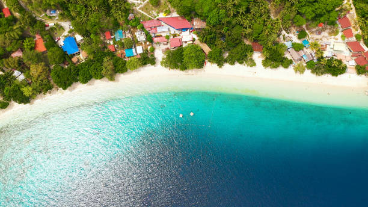
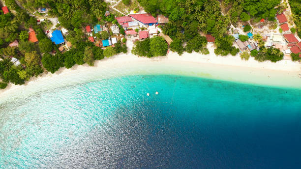
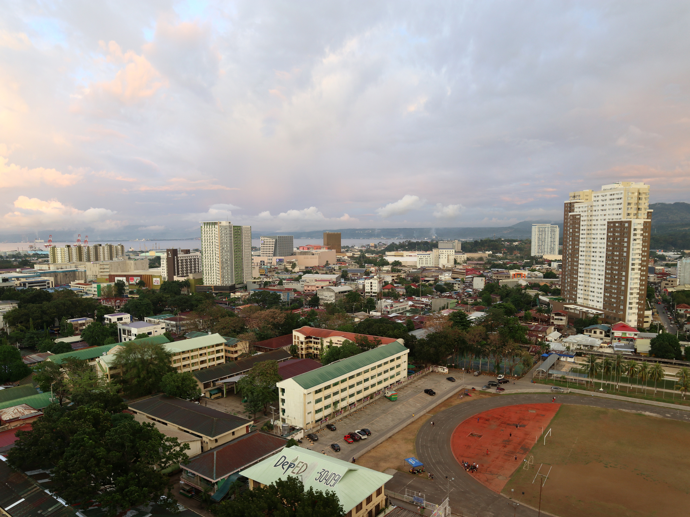
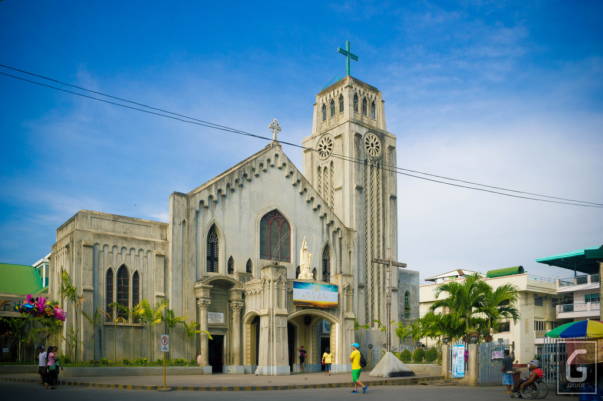
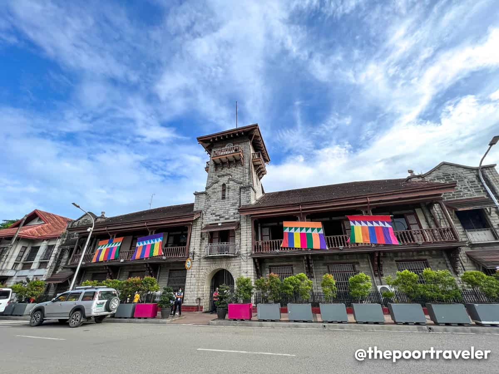
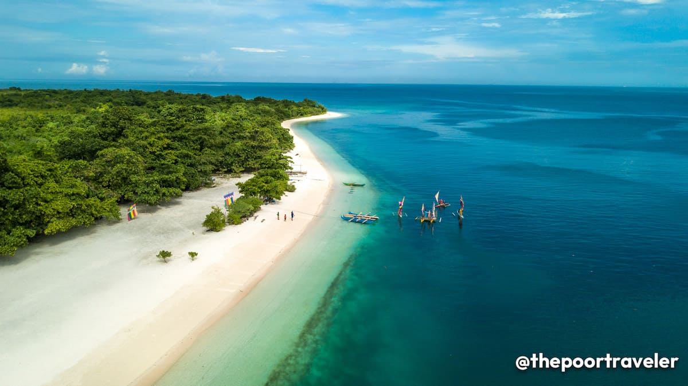

Davao City
Davao City is a highly urbanized city located in the Davao Region of the Philippines. It is the center of Metro Davao, the second most populous metropolitan area in the Philippines, and serves as the main trade, commerce, and industry hub of Mindanao. The city has a total land area of 2,443.61 km2, making it the largest city in the Philippines in terms of land area. Davao is also home to Mount Apo, the highest mountain in the Philippines
 

Cagayan De Oro (CDO)
Cagayan de Oro (CDO), officially the City of Cagayan de Oro (Cebuano: Dakbayan sa Cagayan de Oro; Maranao: Bandar a Cagayan de Oro; Filipino: Lungsod ng Cagayan de Oro), is a 1st class highly urbanized city in the region of Northern Mindanao, Philippines. It is the capital of the province of Misamis Oriental where it is geographically situated but governed administratively independent from the provincial government. According to the 2020 census, it has a population of 728,402 people. Cagayan de Oro also serves as the regional center and business hub of Northern Mindanao, and part of the growing Metropolitan Cagayan de Oro area, which includes the city of El Salvador, the towns of Opol, Alubijid, Laguindingan, Gitagum, Lugait, Naawan, Initao, Libertad and Manticao at the western side, and the towns of Tagoloan, Villanueva, Jasaan, Claveria and Balingasag at the eastern side.
 Zamboanga City
Zamboanga City was founded by Spanish forces in 1635 on the site of a native settlement. Its name is derived from the Malay jambangan (“place of flowers”), and bougainvillea, orchids, and other tropical flowers line its roadsides. Fort Pilar, the shrine of Our Lady of the Pillar, was built in the 17th century for the protection of Christian settlers against Moro (local Muslim) pirates; it now houses a branch of the national museum. The city is also the site of Western Mindanao State University (founded 1918). Incorporated in 1936, the city was largely rebuilt after World War II.
 